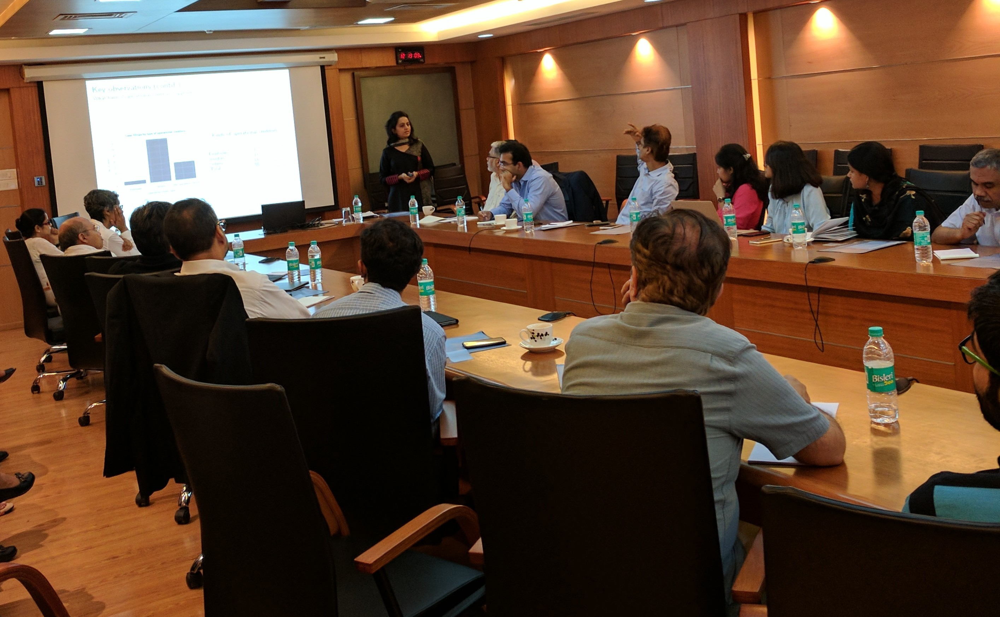
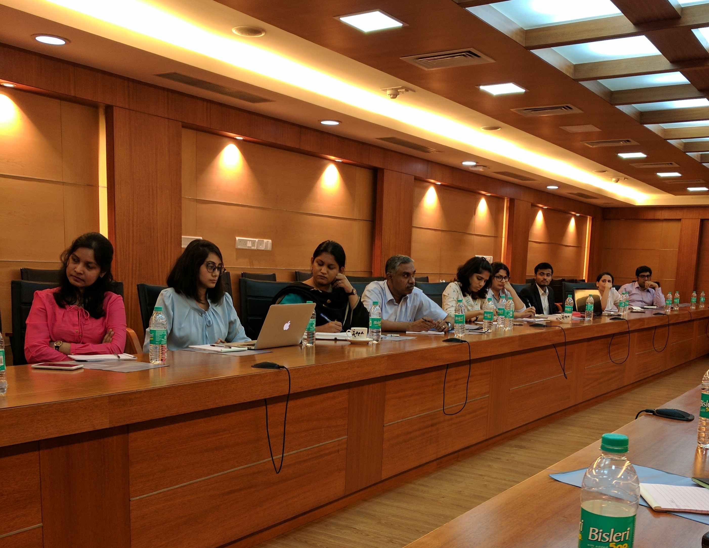
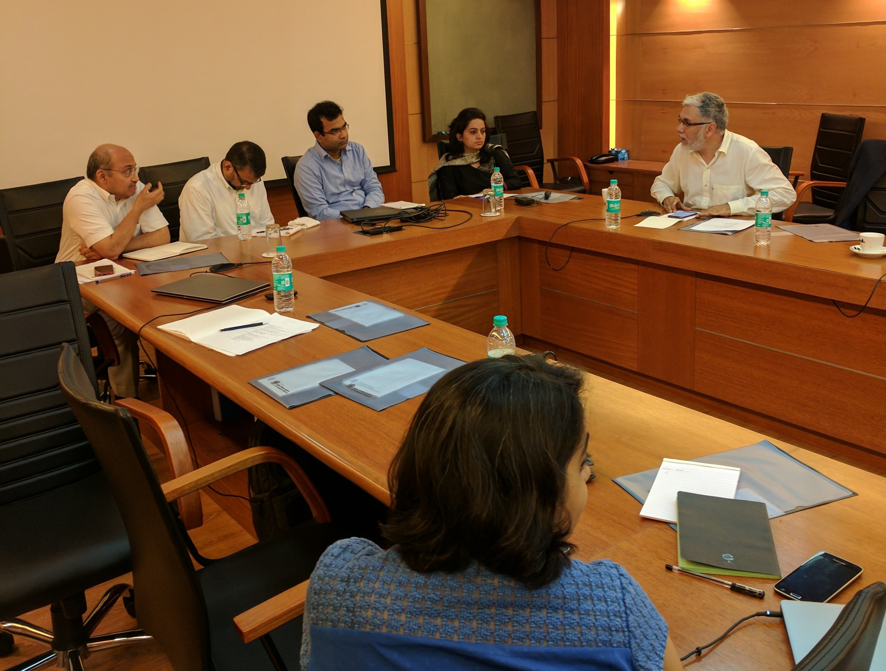
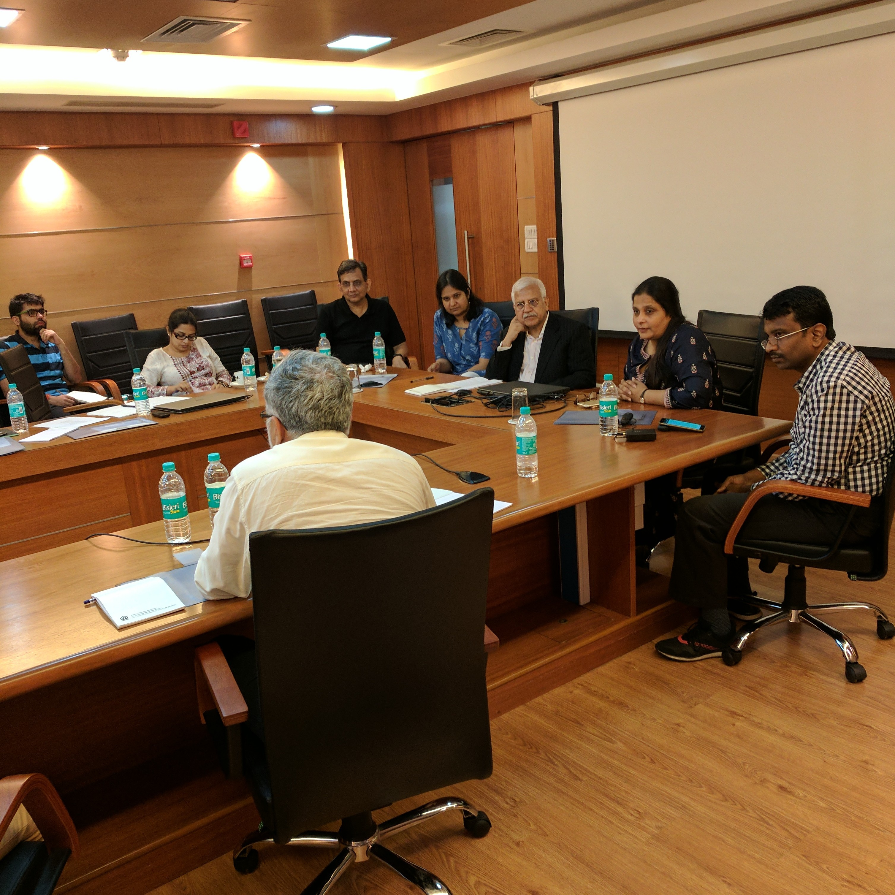

Field workshop on firm finance research
24th June 2017
Seanza Conference Hall, Indira Gandhi Institute of Development Research, Mumbai
The IGIDR field workshop on firm finance aims to bring together experts in a field to discuss research ideas and policy relevant questions, dedicating time for discussion and presentation that is larger than presentation at the typical research conference. The audience for these workshops includes academics, participants from the domestic and international legal and financial industry, policy makers from the local government as well as regulators.
This year, the policy discussions will focus on issues related to credit for firms. The first is the first-year review of the implementation of the Insolvency and Bankruptcy Code, the law that strengthens the rights of the creditor in default. How well this law is implemented has significant ramifications for the development of public debt markets, that is required in India for greater efficiency in firm and project financing. The second is a review of the present credit crisis for Indian firms, with the large scale distress visible in bank loans. The discussion will focus on what factors present a barrier in resolving this distress, and why the bank credit crisis may be in place longer than the current debates suggest.
The agenda for the workshop is as follows:
| 09:00 - 09:45 | Registration, Coffee and Tea |
| 09:45 - 10:00 | Introduction Susan Thomas, IGIDR |
| 10:00 - 11:00 | Foreign investors under stress: Firm level
evidence
[presentation] Ajay Shah and Ila Patnaik, NIPFP and Nirvikar Singh, University of California, Santa Cruz Discussant: Harsh Vardhan, Bain Consulting |
| 11:00 - 12:00 | Cyclicality of leverage: A study of Indian
firms
[presentation] Rajeswari Sengupta, IGIDR and Arpita Pattanaik, Finance Research Group Discussant: Subrata Sarkar, IGIDR [presentation] |
| 12:00 - 13:30 | Panel: A review of one year of the Insolvency
and Bankruptcy Code
[presentation] Presentation: Bhargavi Zaveri, Finance Research Group, IGIDR Panelists: Sharad Bhatia, Multiples Equity Abizer Diwanji, Ernst & Young Ajay Shah, NIPFP, (Chairperson) Suharsh Sinha, AZB Partners Bhargavi Zaveri, Finance Research Group |
| 13:30 - 14:30 | Lunch |
| 14:30 - 15:30 | Misallocation due to inefficient exits:
Evidence from
India Nirupama Kulkarni, CAFRAL Discussant: Poonam Mehra, NITIE [presentation] |
| 15:30 - 16:45 | Panel: Unravelling corporate distress in India [presentation] Presentation: Anjali Sharma, Finance Research Group, IGIDR Panelist: Praveen Chakravarty, IDFC Institute J.N.Gupta, Stakeholders Empowerment Service Badri Narayan, Third Eye Capital Ajay Shah, NIPFP (Chairperson) Anjali Sharma, Finance Research Group, IGIDR Nipa Sheth, Trust Capital Harsh Vardhan, Bain Consulting, |
| 16:45 - 17:00 | Summing up and thanks Susan Thomas, IGIDR |




 |